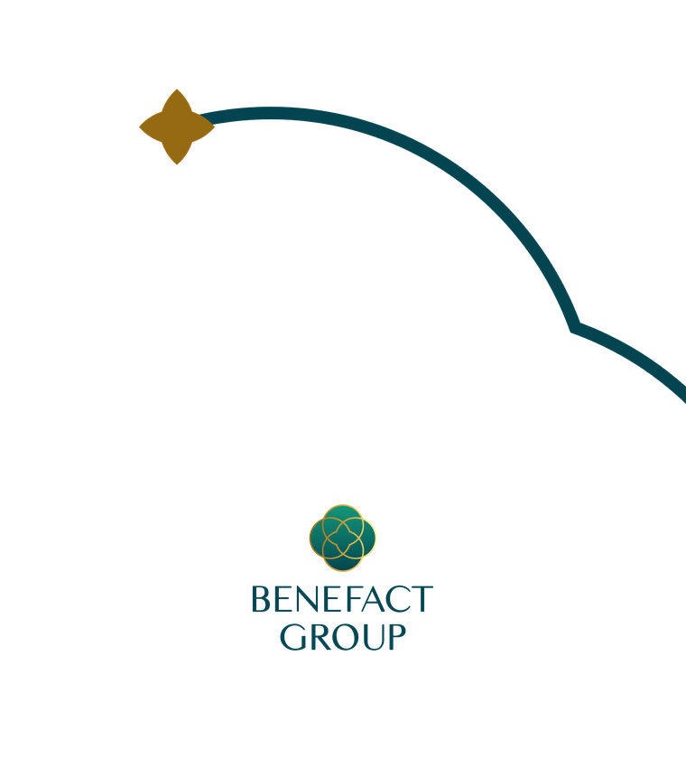
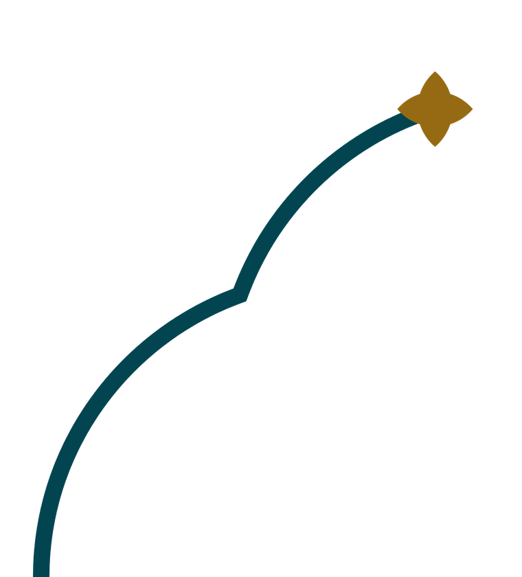
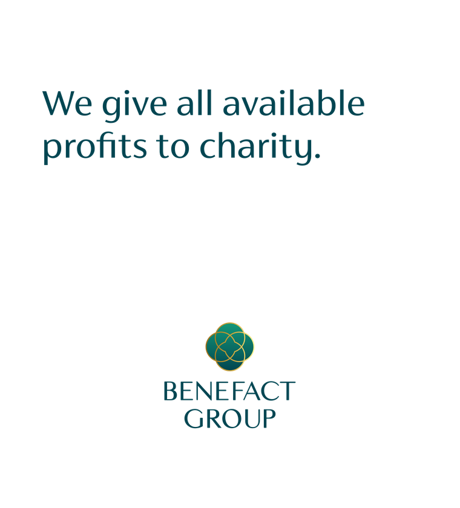
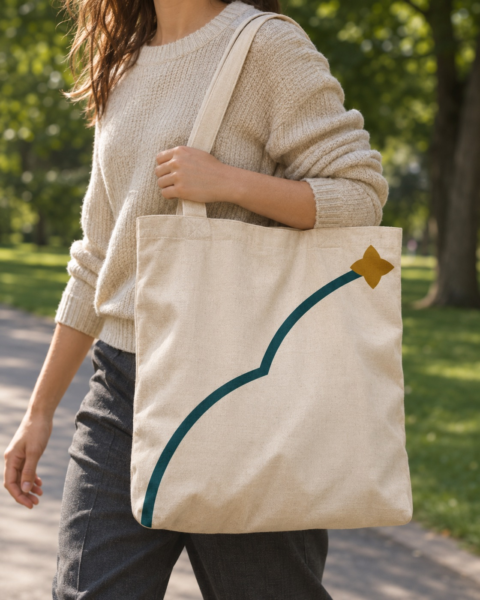
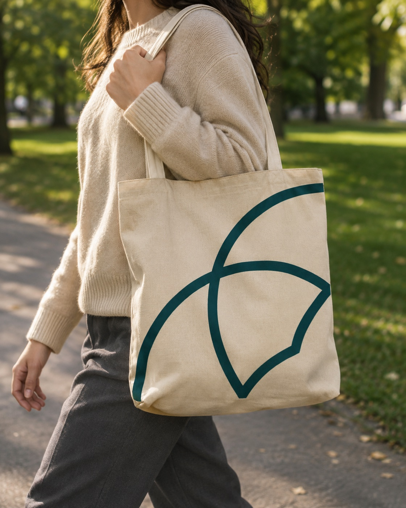
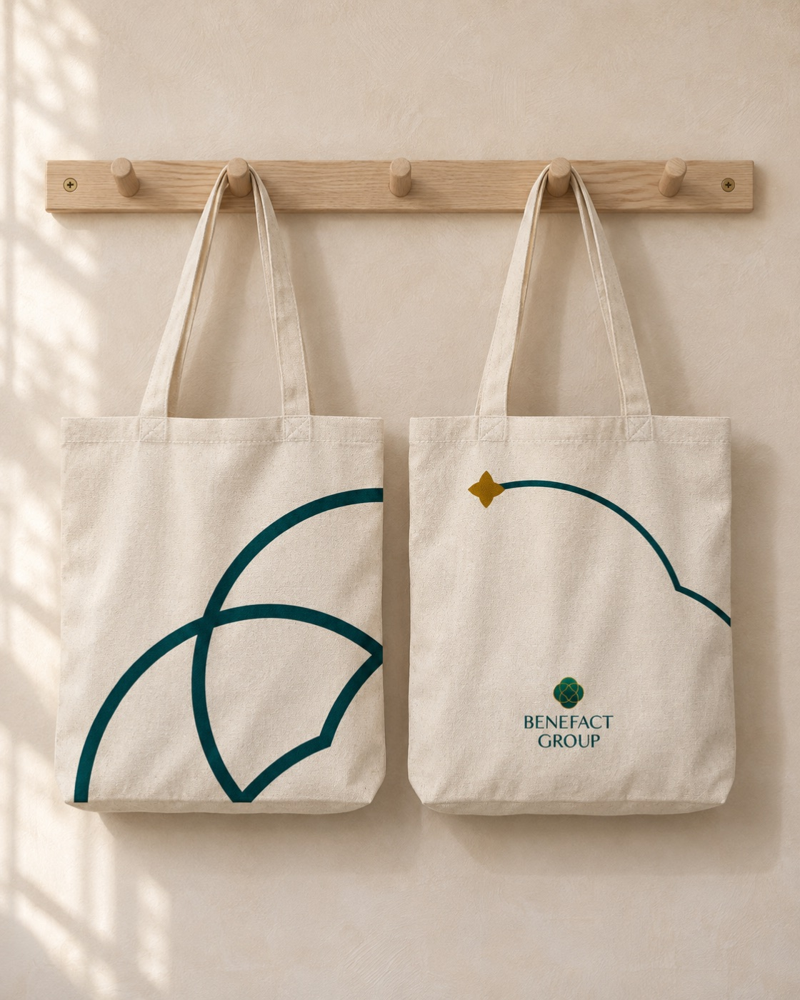
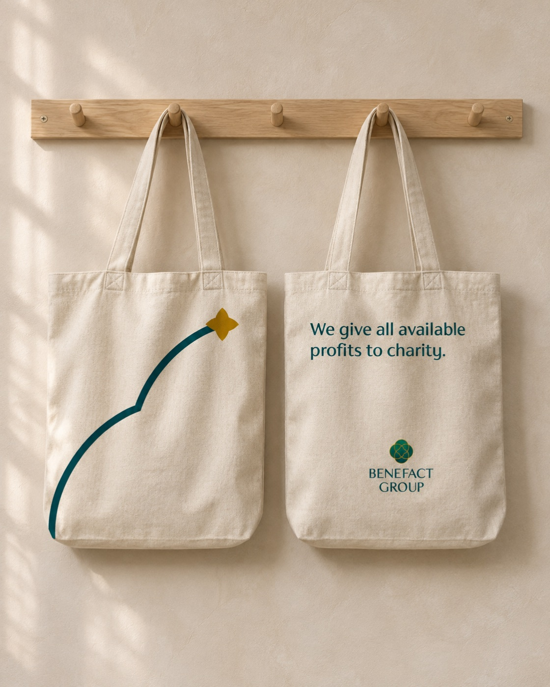
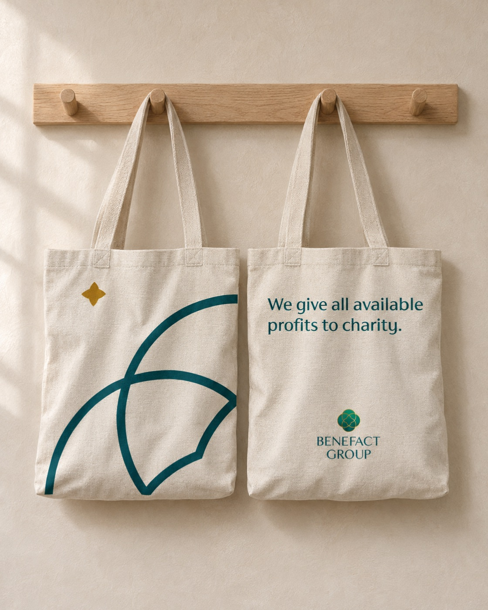

Benefact Group tote
Three designs for a natural cotton tote, built from the outline quatrefoil and the gold star and printed in racing green and dark gold.
The artwork
Front and back of each bag, 380 × 420 mm, shown on the natural cotton. Each printer pack has the artwork with no background, one film per screen, the logo in position and a spec sheet.
A · Pair

The oversized outline on the front, and a line drawn from it on the back.
Download printer packB · Corner line


One line traces the outline from the base and lands in a gold star.
Download printer packC · Corner and star

The oversized outline with a single gold star.
Download printer packMock-ups
Generated images for the feel of each bag. The artwork above is the exact design.




